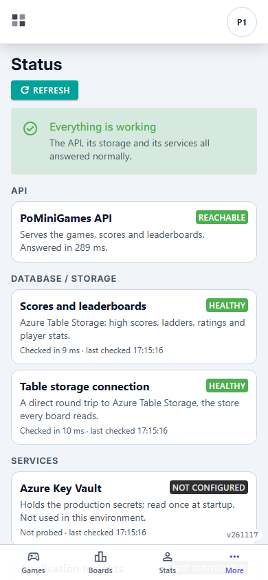
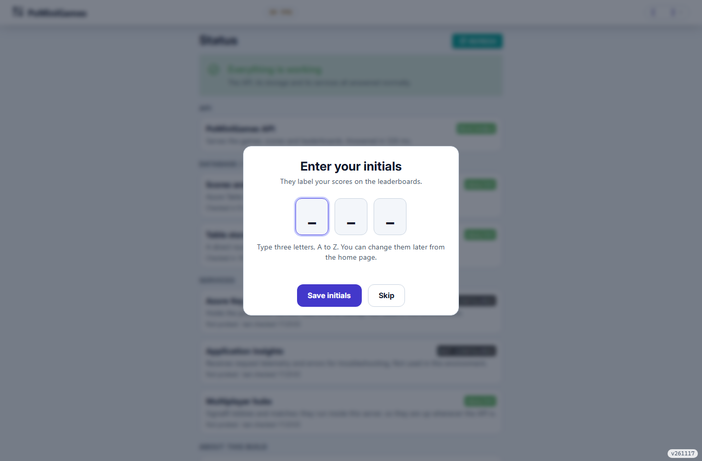
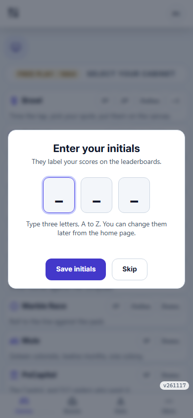
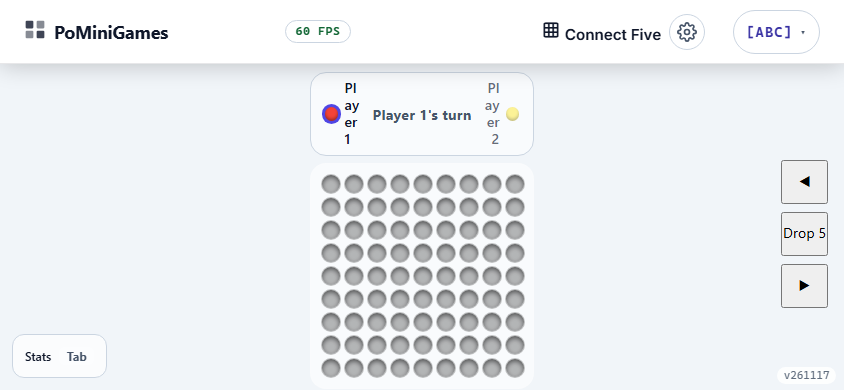
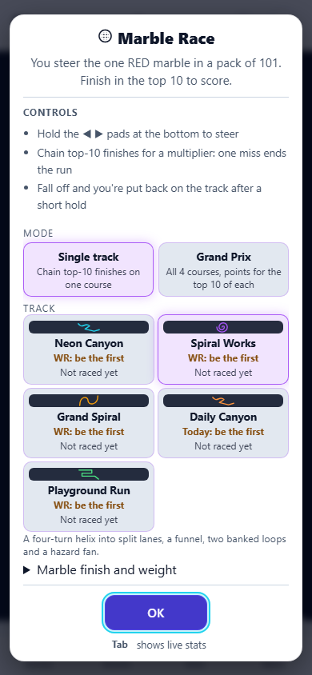

Before: browser /diag rendered "Page not found"; the status view lived only at /health and read /api/health. After: /diag (alias /health) shows a status banner, API reachability and response time, each store and service with status, purpose, latency and last check, plus version and environment, from GET /api/diag.


Before: the build date was screen-reader only; nothing was visible bottom-right. After: v{YYMMDD} is fixed bottom-right on every page, above the modal layer, so the first-visit initials prompt cannot hide it. The prompt is now a validated form: an inline error row under the slots and Save disabled while saving.


